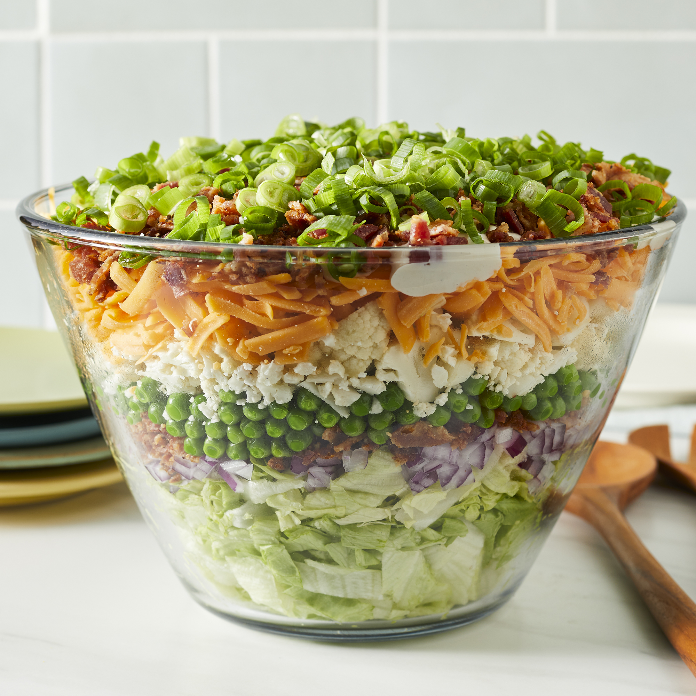

Seven Layer Salad Recipe

Description
Prep:
15 mins
Cook:
15 mins
Total:
30 mins
Servings:
12
Yield:
12 servings
Nutrition Info
Ingredients
- 1 pound bacon
- 1 large head iceberg lettuce - rinsed, dried, and chopped
- 1 red onion, chopped
- 1 (10 ounce) package frozen green peas, thawed
- 10 ounces shredded Cheddar cheese
- 1 cup chopped cauliflower
- 1 ¼ cups mayonnaise
- 2 tablespoons white sugar
- ⅔ cup grated Parmesan cheese
Steps
- Place bacon in a large, deep skillet.
Cook over medium high heat until evenly brown.
Crumble and set aside.
- In a large flat bowl, place the chopped
lettuce and top with a layer of onion, peas,
shredded cheese, cauliflower and bacon.
- Prepare the dressing by whisking together
the mayonnaise, sugar and Parmesan cheese.
Drizzle over salad and refrigerate until chilled.